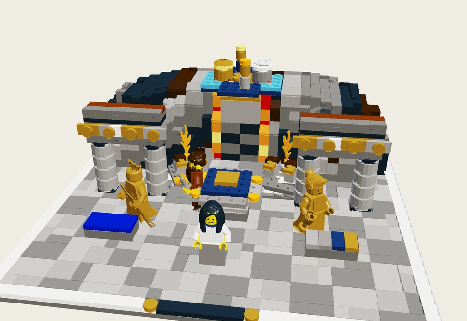

The Forge of Hephaestus & The Revolving Bear
Ἐν μὲν γαῖαν ἔτευξ’, ἐν δ’ οὐρανόν, ἐν δὲ θάλασσαν… Ἄρκτον θ’, ἣν καὶ Ἄμαξαν ἐπίκλησιν καλέουσιν
“On it he wrought the earth, and the heaven, and the sea, the unwearied sun, and the full moon; and the Bear, which revolves in place and watches Orion, and alone has no share in the baths of Ocean.”
Inside Hephaestus’s colonnaded bronze foundry on Olympus: twin articulated bellows pump into the volcanic magma hearth as Hephaestus hammers the five-fold shield blank on a revolving anvil turntable, flanked by his two living Golden Handmaidens and Silver-Footed Thetis beneath the revolving Celestial Vault.
The object: Twin Turntables: The Revolving Bear Celestial Vault & The Five-Fold Anvil (two 61485c01 Turntables) — rotate the 8×8 celestial dome above the furnace so the Bear revolves watching Orion, and turn the five-fold shield blank on Hephaestus’s anvil.